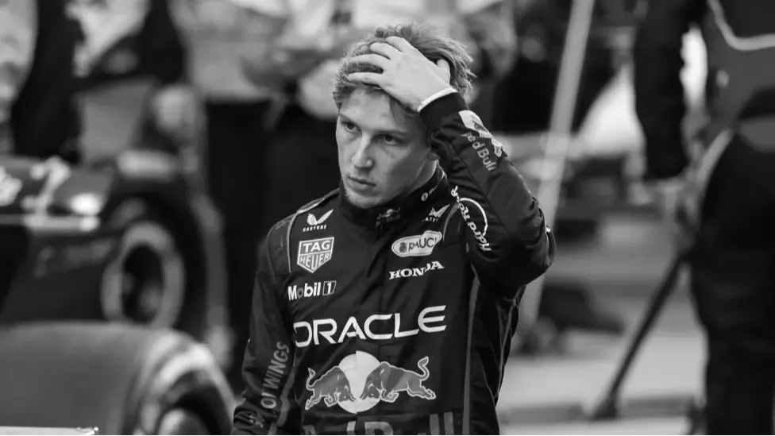
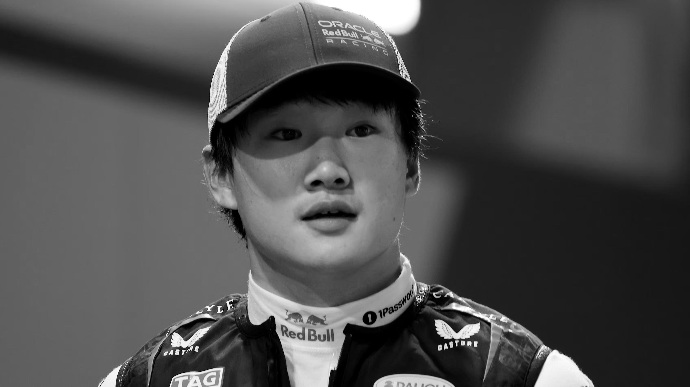
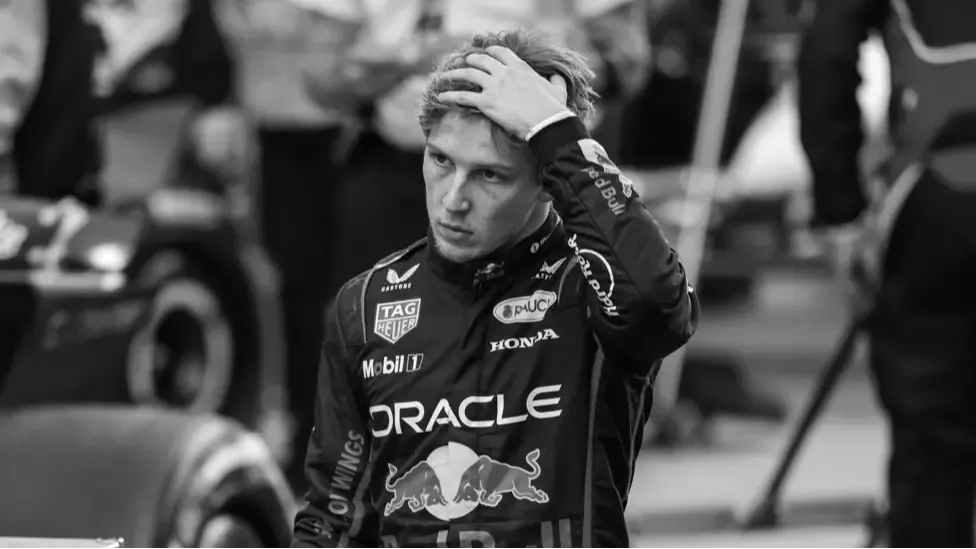
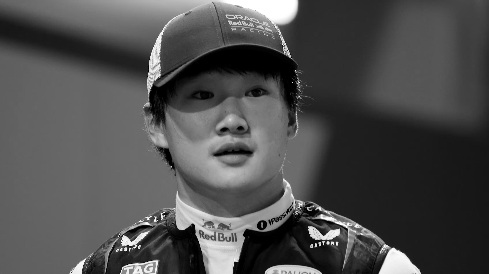

I've always lived by "No Risk, Full Push" because people don't understand what risk actually is. When I say no risk, I mean I only commit when I know the limits—I've studied the data, I know what the car can do. That's not risk, that's just being precise. And once I know those limits, why hold back? Full push is the only way to get everything out of the car. If you're not pushing to the maximum, you're leaving time on the table, and that's the difference between winning and losing. When people see me sending it into a corner, they think it's too much, but to me, it's simply what's possible. I trust myself completely because I've done this thousands of times. Anything less isn't racing, it's just driving around, and that's not what I'm here for.
Look, "Mad Max" isn't something I plan—it just happens when everything's on the line. When there's pressure, when things get tight, when everyone expects you to crack, that's when I feel most alive. It's like a switch flips and suddenly everything slows down, becomes crystal clear. People see it as aggressive or over the top, but honestly, it's just me refusing to accept anything less than what I came for. Those moments when it's all or nothing? That's where I thrive. Some drivers get nervous, start overthinking, but I just go for it. No hesitation, no doubts. Maybe it looks mad from the outside, but in the car, in that moment, it's the most natural thing in the world. That's when the real racing happens.
Yeah, the four titles—it feels amazing, but honestly, once you've won one, you just want the next one. People ask me if it gets easier or if I'm satisfied, but it's the opposite. Each championship makes you hungrier because you know what it takes and you don't want to let that standard drop. I'm not collecting trophies just to have them on a shelf—I'm racing because I love pushing myself and the team to be better every single time. The moment you're satisfied is the moment you start going backwards, and that's not me. There's always something to improve, always another challenge, always someone trying to beat you. That's what keeps me going. Four is great, but why stop there? I want to see how far we can take this.
 


